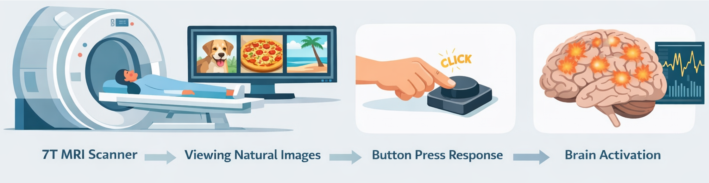

Decoding Functional Networks for Visual Categories via Graph Neural Networks
2Department of Psychology, Ben-Gurion University of the Negev

Key Contributions
- We model stimulus-driven fMRI as signed functional brain graphs, separating positive and negative connectivity patterns.
- We decode visual categories from distributed functional networks rather than flattened voxel or ROI features.
- We combine a learned edge mask with Gradient × Input saliency to reveal both global and category-specific subnetworks.
- We identify reproducible category-selective brain networks for food, sports, and vehicle stimuli.
Abstract
We study how distributed functional coupling encodes visual categories in the human cortex. Using high-resolution 7T fMRI from the Natural Scenes Dataset (NSD), we construct parcel-level connectivity graphs and train a Signed Graph Neural Network that models both positive and negative interactions. Interpretability is embedded through a shared sparse edge mask and complemented by class-specific Gradient × Input saliency. The model achieves accurate multi-class decoding while revealing biologically meaningful subnetworks in ventral and dorsal pathways.
Background
fMRI measures brain activity indirectly through the BOLD signal, which reflects changes in oxygenated and deoxygenated blood. When brain regions fluctuate together, they are functionally connected, and these interactions can be represented as functional brain networks.
Most decoding approaches focus on voxels, ROIs, or vectorized connectivity features. Our goal is to move from isolated local responses to distributed network interactions: to decode visual categories, identify which regions communicate, and reveal category-selective subnetworks.

Why Graph Neural Networks?
Brain connectivity is naturally a graph: nodes correspond to brain regions or parcels, and edges represent functional connectivity. Graph Neural Networks preserve this structure, learn from neighbor interactions, and capture multi-hop dependencies across the network.
This makes GNNs a natural fit for learning category-selective patterns from parcel-to-parcel interactions, instead of flattening connectivity matrices into vectors and losing relational structure.
Method
Dataset and Labels
- Natural Scenes Dataset (NSD)
- 7T stimulus-driven fMRI
- 8 subjects
- Up to ~10,000 natural images per subject
- Categories: sports, food, vehicle
- Labels built from COCO masks and captions
Connectivity and Model
- Parcel-level correlation matrices
- Signed graph split into positive and negative edges
- Signed GNN for graph classification
- Cross-entropy training objective
- Mask sparsity and entropy regularization
- Built-in interpretability

Label Fusion and Connectivity Construction
We combine two evidence sources for each image: mask evidence as spatial evidence and text evidence as semantic evidence. This fusion gives more reliable labels for natural scenes than either source alone.
Each sample is represented by a connectivity matrix, where entry (i, j) captures the correlation between region i and region j. Rather than asking only which region responds, we model which regions interact with each other.


Training Objective and Explainability
The training objective combines cross-entropy loss with mask regularization, including sparsity and entropy terms. The idea is not only to classify accurately, but also to learn a sparse and interpretable connectivity backbone.
We use two complementary explanation methods. The edge mask is learned during training and reveals global importance. Gradient × Input is computed after training and provides category-specific saliency. Together they give a global view plus fine-grained relevance.

Experiments and Results
The model learns meaningful and separable connectivity patterns. In the learned embedding space, clear clustering emerges by visual category. The discovered subnetworks are reproducible across subjects and align with known visual-system organization.
Performance Summary
- Mean test accuracy: 0.78
- Mean macro-AP: 0.88
- Food AP: 0.92
- Sports AP: 0.88
- Vehicle AP: 0.84
Category-Selective Networks
- Food: ventral visual + limbic / orbitofrontal
- Sports: dorsal visuomotor + parietal
- Vehicle: lateral occipital + ventral visual
- Patterns are reproducible across subjects


Conclusion
Visual categories are encoded in distributed functional networks. A Signed GNN can decode category information from stimulus-driven connectivity, while separating positive and negative edges preserves important network structure. Combining edge masks and Gradient × Input provides interpretable explanations and links machine learning with network neuroscience.
Poster
You can replace this with the final camera-ready PDF later.
BibTeX
@inproceedings{karmi2026decoding,
title = {Decoding Functional Networks for Visual Categories via Graph Neural Networks},
author = {Karmi, Shira and Avidan, Galia and Riklin-Raviv, Tammy},
booktitle = {Proceedings of the IEEE International Symposium on Biomedical Imaging (ISBI)},
year = {2026}
}